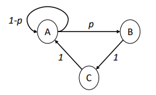
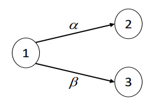
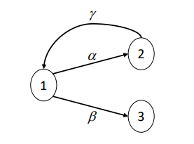

Análisis transitorio de cadenas de Markov#
En este documento se explican los fundamentos matemáticos del análisis transitorio de las cadenas de Markov en tiempo discreto y continuo. A partir de algunos casos de modelos de sistemas, se presentan los resultados del análisis transitorio que permiten cuantificar indicadores sobre el rendimiento del sistema.
Introducción#
Definir un modelo de un sistema cumple generalmente con múltiples objetivos. El proceso mismo de modelado es una actividad de la que normalmente surgen preguntas relevantes sobre varios aspectos del sistema de interés, y que permite profundizar en su funcionamiento. Modelar un sistema permite la caracterización de muchos elementos cualitativos y cuantitativos para responder diferentes preguntas de interés sobre su desempeño.
Los modelos de cadenas de Markov son modelos dinámicos, en el sentido que incorporan de forma natural la dimensión temporal de la evolución, por lo cual es pertinente querer contestar preguntas que hacen referencia a estados futuros del sistema. Por la propiedad de no memoria de las cadenas de Markov (sea en tiempo discreto o en tiempo continuo), el conocimiento de un estado inicial y las probabilidades de transición a un paso es suficiente para poder determinar las distribuciones de probabilidad de estado en tiempos futuros.
Hay dos distintos tipos de análisis a realizar para modelos dinámicos de sistemas, utilizando cadenas de Markov:
El análisis transitorio (también se dice en el transitorio, en inglés transient analysis), que busca determinar el estado del sistema en un punto (o en una secuencia de puntos) determinado en el tiempo.
El análisis en el largo plazo, que pretende determinar el estado que el sistema alcanza después de un tiempo muy largo, más precisamente cuando el tiempo tiende al infinito.
En este documento nos concentramos en el análisis transitorio de cadenas de Markov.
Análisis transitorio de cadenas de Markov en tiempo discreto#
Consideramos una cadena de Markov en tiempo discreto (CMTD) \(\{ Z_{n},\ n \geq 0\}\), con espacio de estados \(S\) y matriz de probabilidades de transición a un paso \(\mathbb{P}\).
Como ya se explicó en lecturas anteriores, la matriz \(\mathbb{P}\) es una matriz de probabilidades condicionales, que permite conocer la probabilidad de alcanzar un estado \(j\) en un paso, dado que el estado actual de la cadena de Markov es el estado \(i\). En una fórmula:
\(p_{ij} = P\left\lbrack Z_{n + 1} = j \middle| Z_{n} = i \right\rbrack\).
Recuerde que, por la propiedad de homogeneidad, el que aparezca en la fórmula anterior el índice \(n\) no quiere decir que la probabilidad sea definida para un paso específico de la evolución. Los elementos de la matriz \(\mathbb{P}\) proporcionan directamente una manera de calcular la distribución de probabilidad del estado de la cadena en el futuro.
Nota
El elemento \(i,j\) de la matriz \(\mathbb{P}\) de una CMTD es la probabilidad de que el proceso en la próxima observación se encuentre en el estado \(j\) dado que en la observación actual se encuentra en el estado \(i\). Es importante recordar que el índice de la fila es el índice que identifica la observación actual, y la columna la observación futura.
Puede que el estado inicial (o actual) de la CMTD no sea conocido con certeza, pero se conozca la distribución de probabilidad. En otras palabras, se conoce, por cada estado \(i \in S\), la probabilidad \(P\lbrack Z_{0} = i\rbrack\). Llamamos a esta probabilidad \(\alpha_{i}\), y denotamos con \(\overrightarrow{\alpha}\) el vector que proporciona la probabilidad de que el proceso se encuentre en los estados \(S\), lo que se llama distribución de probabilidad de estado (en inglés state probability distribution), en el tiempo \(n = 0\).
A partir del vector de distribución de probabilidad de estado en el tiempo \(0\), es posible calcular el vector de distribución de probabilidad de estado en el tiempo \(1\ \)(que denotamos con \({\overrightarrow{\pi}}^{1})\) a través del siguiente producto:
El resultado de la multiplicación entre el vector \(\overrightarrow{\alpha}\ \)y la matriz \(P\) es otro vector de probabilidades, \({\overrightarrow{\pi}}^{1}\), el cual proporciona la distribución de probabilidad de estado al paso 1. De la misma manera, cuando se conozca la distribución de probabilidad de estado en el paso \(n\), es posible calcular la distribución de probabilidad de estado en el paso \(n + 1\), como sigue:
Ejercicio 1#
Ejercicio 1
Consideramos la CMTD \(\{ Z_{n},\ n \geq 0\}\) con espacio de estados \(S = \{ A,B,C\}\), cuya matriz de transición de probabilidad a un paso \(P\) y diagrama de transición de estados, son los siguientes:

Supongamos que la cadena se encuentre en el estado \(A\) en el paso (u observación) \(n\), y determinamos la probabilidad de que se encuentre en cada uno de los estados de \(S\) en el paso \(n + 1\). De un análisis directo del diagrama de transición se obtiene que:
\(P\left\lbrack Z_{n + 1} = A \middle| Z_{n} = A \right\rbrack = 1 - p\) la cadena recicla en A
\(P\left\lbrack Z_{n + 1} = B \middle| Z_{n} = A \right\rbrack = p\) la cadena transita de A a B
\(P\left\lbrack Z_{n + 1} = C \middle| Z_{n} = A \right\rbrack = 0\) no es posible alcanzar C en un solo paso
Estas probabilidades corresponden a los tres elementos de la primera fila de la matriz de transición \(P\), y se encuentran en la primera fila porque el estado inicial (el estado \(A\)) es el primero en el orden.
El vector inicial de distribución de probabilidad de estado en este ejemplo corresponde a \({\overrightarrow{\pi}}^{n} = (1,0,0)\), el vector que asigna probabilidad 1 al primer estado (\(A\)) y 0 a los demás, ya que en este caso el estado inicial es conocido.
Si calculamos el producto \({\overrightarrow{\pi}}^{n} \bullet P\) obtenemos:
$\({\overrightarrow{\pi}}^{n} \bullet P = (1,0,0) \bullet \begin{bmatrix} 1-p & p & 0 \\ 0 & 0 & 1 \\ 1 & 0 & 0\\ \end{bmatrix} = (1-p, p, 0) = \overrightarrow{\pi}^{n+1}\)
O sea, el producto \({\overrightarrow{\pi}}^{n} \bullet P\) selecciona las probabilidades de la primera fila de la matriz \(P\), tal como obtuvimos al calcular la distribución de probabilidad de estado directamente a partir del diagrama de transición.
Ejercicio 2#
Ejercicio 2
Para la misma CMTD del ejemplo anterior, consideremos ahora que en el paso \(n\), la cadena puede ocupar cualquier estado de \(S\) con igual probabilidad, y calculamos la distribución de probabilidad de estado en el paso \(n + 1\). Observamos que la suposición de una distribución de probabilidad de estado uniforme es común cuando no se pueda hacer ninguna predicción sensata acerca del estado real del proceso estocástico. Para la distribución inicial \({\overrightarrow{\pi}}^{n} = \left( \frac{1}{3},\frac{1}{3},\frac{1}{3} \right)\), el cálculo a través del producto con la matriz \(P\) nos permite obtener:
\({\overrightarrow{\pi}}^{n} \bullet P = \left( \frac{1}{3},\frac{1}{3},\ \frac{1}{3} \right) \bullet \ \begin{bmatrix} 1 - p & p & 0 \\ 0 & 0 & 1 \\ 1 & 0 & 0 \end{bmatrix} = \left( \frac{1}{3}(1 - p) + \frac{1}{3} ,\frac{1}{3}p,\frac{1}{3} \right) = {\overrightarrow{\pi}}^{n + 1}\)
Observamos que llevar a cabo este cálculo por inspección directa del diagrama de transición es mucho más laborioso que a través de su forma matricial, ya que se necesita sumar todas las probabilidades de todas las posibles evoluciones del modelo que llevan a cada estado. Por ejemplo, para el primer elemento \({\overrightarrow{\pi}}_{A}^{n + 1}\) del vector, se suma la probabilidad de dos evoluciones:
La probabilidad de que la cadena empiece en \(A\) (prob. \(1/3\)) y que no transite a \(B\) (prob. \(1 - p\));
La probabilidad de que empiece en \(C\) (prob. \(1/3\)) y transite a \(A\) (prob. \(1\))
Además, el cálculo a partir de la forma algébrica puede ser fácilmente automatizado en una herramienta computacional.
La predicción que podemos determinar con la fórmula \({\overrightarrow{\pi}}^{n + 1} = {\overrightarrow{\pi}}^{n} \bullet P\) es extensible en el tiempo. Si consideramos el vector \({\overrightarrow{\pi}}^{n + 1}\) como una nueva distribución inicial de probabilidad de estado, podemos determinar la distribución de probabilidad de estado en la observación \(n + 2\) usando la misma fórmula:
Entonces podemos obtener:
Y en general:
A través de las potencias de la matriz \(P\) y de una distribución inicial es por ende posible determinar la distribución de probabilidad de estado para cualquier índice en el futuro. Las potencias de la matriz P son todavía matrices de probabilidad condicionales (y por lo tanto la suma de los elementos de cada una de sus filas es 1). El elemento \(i,j\) de la matriz \(P^{m}\) de una CMTD es la probabilidad de que el proceso, después de \(m\) pasos de evolución, se encuentre en el estado \(j\) dado que su estado inicial era el estado \(i\) .
La última expresión que se proporciona es la base para el análisis transitorio de las cadenas de Markov de tiempo discreto, ya que permite obtener la distribución de probabilidad de estado para cualquier índice en el futuro del proceso.
Desde un punto de vista estrictamente matemático, es igual calcular la distribución de la probabilidad de estado en el tiempo \(m\), \({\overrightarrow{\pi}}^{m}\), a partir de aquella inicial \(\overrightarrow{\alpha}\) con la fórmula \({\overrightarrow{\pi}}^{m} = \overrightarrow{\alpha} \bullet P^{m}\), o calcular toda la secuencia de distribuciones \({\overrightarrow{\pi}}^{1},\ {\overrightarrow{\pi}}^{2},\ \ldots,\ {\overrightarrow{\pi}}^{m}\) multiplicando cada vez el vector por la matriz \(P\) en un proceso iterativo. Por el contrario, dependiendo del valor del \(m\) y de la cardinalidad del espacio \(S\), una forma puede resultar mucho más eficiente que la otra en términos del tiempo de cálculo necesario.
Ejercicio 3#
Ejercicio 3
En una línea de producción de gaseosas existen dos máquinas embotelladoras idénticas, cada una con capacidad para embotellar 2,000 botellas/hora de funcionamiento. Cada máquina puede sufrir problemas mecánicos, por lo cual cada hora con probabilidad de 0.1 se daña. Si la máquina se daña, podrá ser reparada solo en la noche, cuando la línea termina su actividad. La producción empieza a las 6AM, y termina a las 5PM. ¿Cuál es la probabilidad de que ambas máquinas paren en un día? ¿Cuál es el número promedio de botellas procesadas en un día en la línea?
Para la primera pregunta dado que:
Las máquinas son idénticas
Las máquinas son independientes
Cuando una máquina para no es reparada en el día
Es posible estudiar el comportamiento de una de ellas, y la probabilidad de que ambas máquinas paren en un día será el cuadrado | de la probabilidad de que una de las máquinas pare.
Definimos la cadena de Markov en tiempo discreto \(\{ X_{n},\ 0 \leq n \leq 11\}\), donde \(X_{n}\) es el estado de la máquina en la hora \(n\)-ésima. El espacio de estados es \(S = \left\{ \text{OK},\ \text{DOWN} \right\},\ \)considerando que cada máquina puede estar operativa (OK), o no (DOWN). La matriz de probabilidades de transición a un paso es la siguiente:
\(P = \begin{bmatrix} 1 - p & p \\ 0 & 1 \end{bmatrix}\)
La distribución inicial de probabilidad es \(\overrightarrow{\alpha} = (1,0)\), ya que la máquina empieza el día funcionando. La probabilidad de que la máquina pare en el día es la probabilidad de que a la hora 5PM (la hora 11 desde el inicio de la operación a las 6AM) la máquina se encuentre en el estado \(DOWN\), lo cual podemos calcular a través de la distribución:
seleccionando la segunda componente del vector (la que corresponde al estado de interés, \(DOWN\)), se tiene que la probabilidad solicitada es de \(1 - (1 - p)^{11}\sim 0.68\). Por ende, la probabilidad de que ambas máquinas paren es aproximadamente igual a \(0.47\).
Para calcular el número promedio de botellas procesadas en un día en la línea de producción, podemos multiplicar por 2 el número de botellas procesadas en promedio por cada máquina, lo cual será dado por el producto entre el número promedio de horas de funcionamiento de la máquina en un día y el número de botellas embotelladas por hora. El número promedio de horas de funcionamiento, que denotamos con \(N\), se puede calcular a partir de la distribución de probabilidad de estado, de la siguiente manera:
En la primera hora, la máquina trabaja 1 hora con probabilidad 1 (la primera componente del vector \(\overrightarrow{\alpha}\))
En la segunda hora, la máquina trabaja 1 hora con una probabilidad \(1 - p\) (la primera componente del vector \({\overrightarrow{\pi}}^{1}\))
En la hora \(i\)-ésima, hasta \(i = 12\), la máquina trabaja 1 hora con una probabilidad \({(1 - p)}^{i - 1}\) (la primera componente del vector \({\overrightarrow{\pi}}^{i - 1}\))
Para calcular \(N\) sumamos todas las contribuciones, obteniendo: \(N = \sum_{j = 0 }^{11}{(1 - p)}^{j} = \frac{1 - {(1 - p)}^{12}}{p}\sim 7.17\ horas,\)
donde la última igualdad se obtiene de las propiedades de las series geométricas. Entonces, el número promedio de botellas producidas es \(7.17 \times 2,000 = 14,340\), por cada máquina, y \(28,680\) en la línea, por día.
Análisis transitorio de cadenas de Markov en tiempo continuo#
Consideramos una cadena de Markov en tiempo continuo (o CMTC) \(\{ X(t),t \geq 0\}\), con espacio de estados \(S\) y matriz de tasas de transición (también llamada matriz generadora) \(Q\).
A diferencia del caso discreto, la matriz \(Q\) no es una matriz de probabilidades condicionales, sino de tasas. Es posible calcular la probabilidad de alcanzar cualquier estado \(j\) en un intervalo de tiempo \(\lbrack 0,t\rbrack\ \)dado que el estado de la cadena de Markov al tiempo 0 es el estado \(i\), es decir, calcular la probabilidad condicional
Observamos que la probabilidad condicional arriba es una función continua del tiempo \(t\), por ende, el análisis necesita utilizar las técnicas del análisis del continuo, es decir límites y derivadas.
Las tasas de transición en la matriz \(Q\) corresponden a probabilidades cuando el intervalo de tiempo \(\lbrack 0,t\rbrack\) es muy pequeño. Es decir, si consideramos un tiempo \(\delta\) cercano a 0, tendremos que
Esta propiedad, que no demostraremos, se obtiene por las distribuciones exponenciales de los tiempos de permanencia en los estados en las CMTC. Recuerde que, por la homogeneidad del proceso, el hecho que en la fórmula de arriba aparezcan valores específicos de los tiempos (en este caso 0 y \(\delta\)) no quiere decir que esta relación solo sea válida para esa ventana especifica de la evolución del proceso.
De esta forma y análogamente al caso discreto, tendremos que, si \(\overrightarrow{\pi}(0)\) es el vector de la distribución de probabilidad de estado en el tiempo 0, la distribución de probabilidad de estado en el tiempo \(\delta\) será aproximadamente
Cuando se considere el límite cuando \(\delta \rightarrow 0^{+}\), la aproximación arriba se vuelve exacta, como sigue:
Ahora bien, observamos que el límite en la parte izquierda de la ecuación de arriba es exactamente la derivada de la función del tiempo \(\overrightarrow{\pi}(\delta)\), por lo cual obtenemos que
Esta ecuación está representando un conjunto de ecuaciones diferenciales lineales. Existe una ecuación por cada estado de la cadena de Markov en tiempo continuo, cuya solución es una función del tiempo que describe la probabilidad condicional de que el proceso ocupe el estado dado que empezó como especifica \(\overrightarrow{\pi}(0)\). Por la forma de la ecuación diferencial (nótese que la función incógnita \(\overrightarrow{\pi}( \bullet )\) aparece en ambos lados), la solución involucra funciones exponenciales. Más precisamente, es posible demostrar que
donde \(e^{Qt}\) es el exponencial de la matriz \(Qt\). El exponencial de una matriz A se define como
Entonces, el análisis transitorio de las cadenas de Markov de tiempo continuo se realiza a través del cálculo del exponencial de la matriz de tasas \(Q\). Este cálculo es muy laborioso y solo puede ser llevado a cabo (excepto en casos muy particulares) por herramientas computacionales.
Ejercicio 4#
Ejercicio 4
Consideramos la CMTC \(\{ X(t),\ n \geq 0\}\) con espacio de estados \(S = \{ 1,2,3\}\), cuya matriz de tasas de transición es la siguiente:
\(Q = \begin{bmatrix} -\alpha -\beta & \alpha & \beta \\ 0 & 0 & 0 \\ 0 & 0 & 0 \end{bmatrix}\)
El diagrama de transición de esta cadena se ilustra en la siguiente figura: 
Para esta cadena, es muy sencillo determinar la evolución en el transitorio. Supongamos que la distribución de probabilidad de estado inicial sea \(\overrightarrow{\pi}(0) = (1,0,0)\), o sea el proceso empieza en el estado 1. Entonces se obtiene:
La primera componente es la probabilidad de que ninguna de las dos transiciones con distribución exponencial haya ocurrido hasta el tiempo \(t\); la segunda es la probabilidad de que la primera transición que ocurra sea aquella de tasa \(\alpha\) y que la transición ocurra antes del tiempo \(t\); la tercera es la probabilidad de que la primera transición que ocurra sea aquella de tasa \(\beta\) y que la transición ocurra antes del tiempo \(t\). Notamos que aquí se utilizan las propiedades de las distribuciones exponenciales, en particular la distribución del mínimo entre exponenciales y la probabilidad de que una exponencial sea menor que otra. En este caso sencillo, el exponencial de la matriz \(Qt\) es la siguiente matriz:
\(e^{Qt} = \begin{bmatrix} e^{- (\alpha + \beta)t} & \frac{\alpha}{\alpha + \beta}\left( 1 - e^{- (\alpha + \beta)t} \right) & \frac{\beta}{\alpha + \beta}\left( 1 - e^{- (\alpha + \beta)t} \right) \\ | 0 & 1 & 0 \\ 0 & 0 & 1 \end{bmatrix}\)
Observamos que la primera fila de la matriz \(e^{Qt}\) es igual al vector \(\overrightarrow{\pi}(t)\), y las demás solo contienen un 1 en la diagonal. Si el vector inicial fuese \(\overrightarrow{\pi}(0) = (0,1,0)\), o sea si el proceso empezara en el estado 2, el producto \(\overrightarrow{\pi}(0)e^{Qt}\) nos daría el vector \(\overrightarrow{\pi}(t) = (0,1,0)\), es decir la distribución de probabilidad de estado no cambiaría.
Ejercicio 5#
Ejercicio 5
Consideramos ahora la CMTC \(\{ X(t),\ t \geq 0\}\) con espacio de estados \(S = \{ 1,2,3\}\), cuya matriz de tasas transición es la siguiente:
El diagrama de transición de esta cadena se ilustra en la siguiente figura:

Por ende, el análisis no es sencillo como en el caso anterior, y resulta practico utilizar algún software para dicho calculo